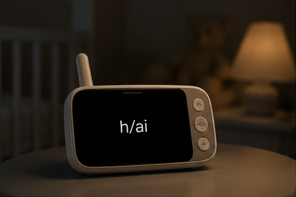
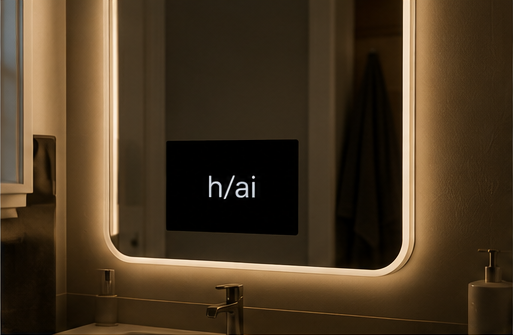
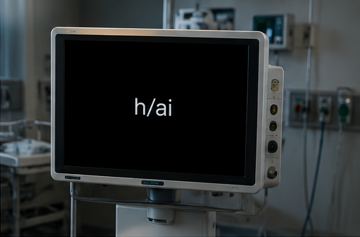
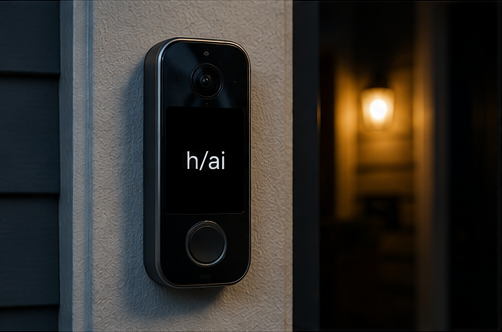
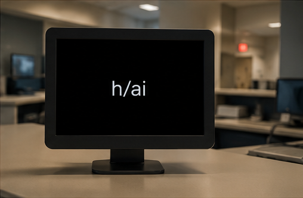
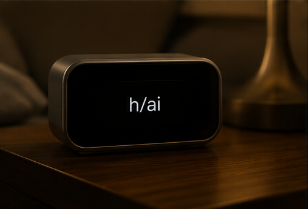
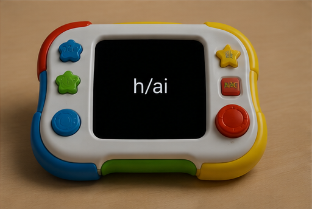
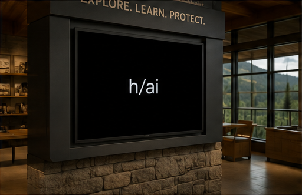
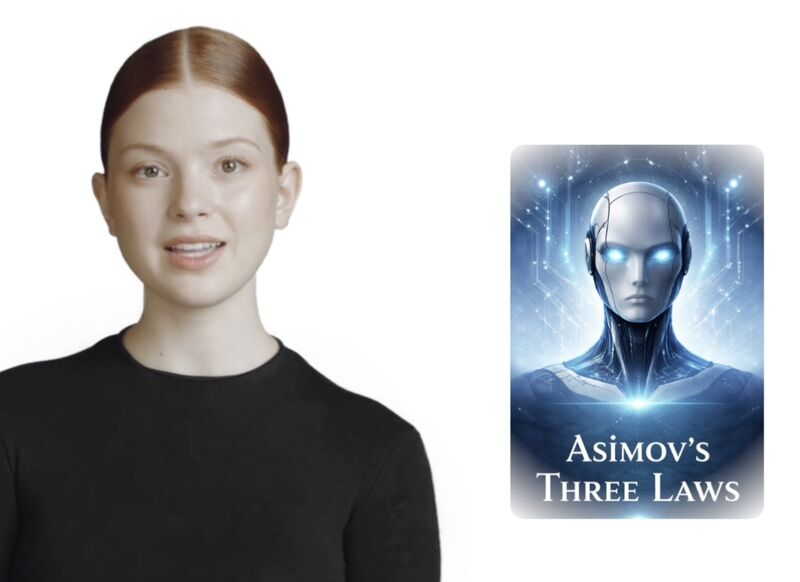

AI Strategy
Helping organizations identify where Human–AI interaction creates meaningful operational value.
Human + Artificial Intelligence
h/ai is an independent Human–AI interaction initiative advancing conversational systems, enterprise AI transformation, and the development of a domain-independent language for intelligent interaction.








About
h/ai helps organizations design, evaluate, and deploy intelligent systems that amplify human capability.
Our work spans foundational research, production systems, enterprise transformation, and the development of the H/AI Primitive Language.
Mission
Human–AI systems should adapt to people rather than forcing people to adapt to technology.
We believe AI should extend human capability through continuity, context, transparency, and collaboration—not replace human judgment.
Transformation
Organizations increasingly recognize AI's potential, but selecting technologies is only one part of successful transformation. h/ai helps organizations evaluate platforms, identify high-value opportunities, design Human–AI interaction systems, and deploy production solutions through a vendor-neutral approach.
Helping organizations identify where Human–AI interaction creates meaningful operational value.
Vendor-neutral evaluation of conversational AI, speech, avatars, orchestration, and multimodal platforms.
Designing production-ready Human–AI systems around customer workflows rather than individual technologies.
Supporting deployment, organizational adoption, governance, and continuous improvement.
Technology rarely fails because of technology. It fails because organizations struggle to evaluate, integrate, and adopt it.
h/ai exists to bridge that gap.
Current Focus
Runtime architectures supporting persistent state, interruption recovery, contextual continuity, and multimodal orchestration.
Exploring authoring environments for AI-native interactive experiences.
Conversational assessment systems supporting adaptive questioning, oral defense, transcript capture, and instructor review.
A domain-independent language for describing Human–AI interaction.
Demonstrations
Public demonstrations illustrating interruption-aware conversational systems and Human–AI interaction.
Each demonstration explores a practical capability that informs the evolution of the H/AI framework.
Human conversation is naturally interruptible. Conversational systems should preserve continuity while allowing people to redirect the interaction at any time.
Interruptions should never force a conversation to start over. Context, visual state, and conversational progress should be restored exactly where they were left.

People, not software, should determine the direction of a conversation. AI should adapt continuously as human priorities change.
A conversational system should recognize missing information, ask the same clarifying questions an experienced employee would, and improve the quality of an interaction before committing to action.
h/ai PRIMITIVE LANGUAGE
The h/ai Primitive Language is a domain-independent language for describing Human–AI interaction independently of implementation technology.
Primitive Families model orthogonal dimensions of Human–AI interaction. Each family models an independent aspect of interaction while remaining interoperable with the others. Together they form a domain-independent language for describing conversational systems, intelligent agents, robotics, education, accessibility, adaptive interfaces, and other interactive environments.
Primitive Families
The Primitive Language organizes Human–AI interaction into orthogonal Primitive Families. Additional
families remain under investigation as the framework evolves.
Models how interaction evolves across time.
Models how information is acquired, represented, transformed, and communicated.
Models reasoning, memory, planning, and action.
Foundational Principle
Human–AI interaction can be described independently of any implementation technology. The h/ai Primitive Language defines that interaction through a small collection of orthogonal primitives organized into Temporal, Information, and Behavioral families. Complex interaction emerges from combinations of simple primitives.
Active Research
h/ai actively investigates emerging questions in Human–AI interaction. These areas represent ongoing research rather than established components of the framework.
Most conversational systems assume a single human and a single AI participant. Real-world interaction is collaborative. h/ai is exploring interaction models for classrooms, families, teams, and other environments where multiple participants communicate simultaneously.
In many human interactions, participants contribute information while a designated individual retains decision authority. Research is underway into conversational systems that can recognize contribution, preserve intent, and route decisions through the appropriate participant.
Future interaction systems may operate within classrooms, meetings, homes, vehicles, and public spaces where multiple humans and AI systems participate simultaneously. h/ai is exploring interaction models for these environments.
Observations
Many of the questions shaping H/AI have emerged through conversations with educators, researchers, founders, and practitioners.
These observations are intended to stimulate discussion rather than present conclusions.
Early Perspectives
It’ll be especially valuable at distinguishing between surface-level knowledge and genuine understanding.
Question: As AI becomes increasingly capable of assisting with knowledge work, what forms of assessment and evidence of understanding will remain meaningful indicators of human capability?
Many organizations no longer struggle with access to AI tools. The greater challenge is integrating those tools into workflows, learning experiences, and decision-making processes in ways that meaningfully improve performance.
Question: If access to AI becomes ubiquitous, what organizational, instructional, and workflow changes are required for AI to become meaningfully integrated into daily practice rather than simply available as a tool?
People
Founder & CTO
Human–AI Interaction · Platform Architecture · AI Runtime Systems · Engineering Leadership
Chief Operating Officer, Enterprise AI Transformation
Enterprise Transformation · Client Strategy · Discovery Engagements · Delivery Leadership · Operational Excellence
Advisory Council
Advisor
Interactive multimedia pioneer and creator-empowerment advocate whose work helped define the era of multimedia authoring systems.
Advisor
Inventor of the Lingo language and a pioneering contributor to interactive authoring systems and computational media.
In Formation
h/ai is assembling an advisory council across AI, education, enterprise transformation, interaction design, and computational media.
“What would an authoring environment for AI-native interactive experiences look like if it were designed for creators rather than only engineers?”
Collaborations
h/ai works with organizations exploring Human–AI interaction, enterprise AI transformation, conversational systems, education, accessibility, and intelligent customer experiences. Engagements range from executive briefings and strategic advisory services to technology evaluation, pilot deployments, and production implementation.
Current areas of collaboration include: